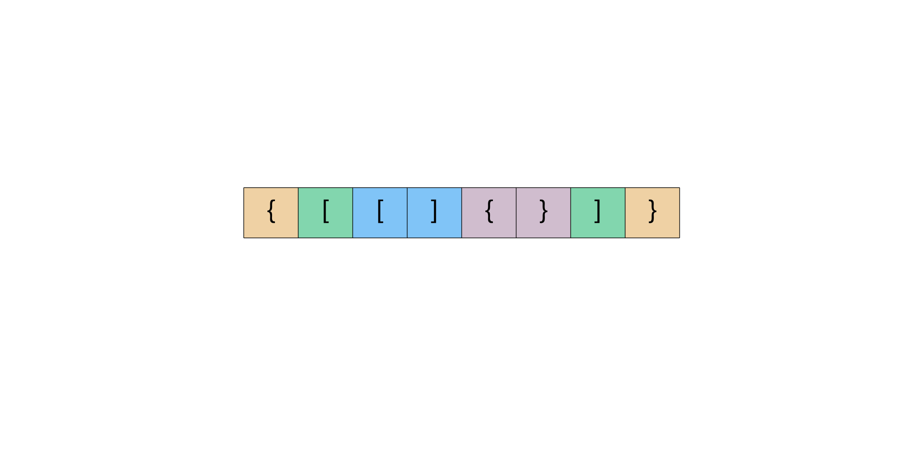

题目0020:有效的括号
题目描述
给定一个只包括'(',')','{','}','[',']'的字符串,判断字符串是否有效。
有效字符串需满足:
- 左括号必须用相同类型的右括号闭合。
- 左括号必须以正确的顺序闭合。
注意空字符串可被认为是有效字符串。
示例1:
输入: "()"
输出: true
示例2:
输入: "()[]{}"
输出: true
示例3:
输入: "(]"
输出: false
示例4:
输入: "([)]"
输出: false
示例5:
输入: "{[]}"
输出: true
解答技巧
想象一下,你正在为你的大学课设编写一个小型编译器,编译器的任务之一(或称子任务)将检测括号是否匹配。
我们本文中看到的算法可用于处理编译器正在编译的程序中的所有括号,并检查是否所有括号都已配对。这将检查给定的括号字符串是否有效,是一个重要的编程问题。
我们这个问题中将要处理的表达式可以包含以下三种不同类型的括号:
()，
{}以及
[]
在查看如何检查由这些括号组成的给定表达式是否有效之前,让我们看一下该问题的简化版本,在简化后的问题中,只含一种类型的括号。这么一来,我们将会遇到的表达式是
(((((()))))) -- VALID
()()()() -- VALID
(((((((() -- INVALID
((()(()))) -- VALID
上我们试着用一个简单的算法来解决这一问题。
- 我们从表达式的左侧开始,每次只处理一个括号。
- 假设我们遇到一个开括号(即
(),表达式是否无效取决于在该表达式的其余部分的某处是否有相匹配的闭括号(即))。此时,我们只是增加计数器的值保持跟踪现在为止开括号的数目。left += 1 - 如果我们遇到一个闭括号,这可能意味着这样两种情况:
i. 此闭括号没有与与之对应的开括号,在这种情况下,我们的表达式无效。当
left == 0,也就是没有未配对的左括号可用时就是这种情况。 ii. 我们有一些未配对的开括号可以与该闭括号配对。当left > 0,也就是有未配对的左括号可用时就是这种情况。 - 如果我们在
left == 0时遇到一个闭括号(例如)),那么当前的表达式无效。否则,我们会减少left的值,也就是减少了可用的未配对的左括号的数量。 - 继续处理字符串,直到处理完所有括号。
- 如果最后我们仍然有未配对的左括号,这意味着表达式无效。
在这里讨论这个特定算法是因为我们从该解决方案中获得灵感以解决原始问题。为了更好地理解我们讨论的算法,请观看下面的动画演示。

如果我们只是尝试对原始问题采用相同的办法,这是根本就行不通的。基于简单计数器的方法能够在上面完美运行是因为所有括号都具有相同的类型。因此,当我们遇到一个闭括号时,我们只需要假设有一个对应匹配的开括号是可用的,即假设left > 0。
但是,在我们的问题中,如果我们遇到],我们真的不知道是否有相应的[可用。你可能会问:
为什么不为不同类型的括号分别维护一个单独的计数器？
这可能不起作用，因为括号的相对位置在这里也很重要。例如:
[{]
如果我们只是在这里维持计数器,那么只要我们遇到闭合方括号,我们就会知道此处有一个可用的未配对的开口方括号。但是,最近的未配对的开括号是一个花括号,而不是一个方括号,因此计数方法在这里被打破了。
方法:栈
关于有效括号表达式的一个有趣属性是有效表达式的子表达式也应该是有效表达式。(不是每个子表达式)例如

此外,如果仔细查看上述结构,颜色标识的单元格将标记开闭的括号对。整个表达式是有效的,而它的子表达式本身也是有效的。这为问题提供了一种递归结构。例如,考虑上图中两个绿色括号内的表达式。开括号位于索引1,相应闭括号位于索引6。
如果每当我们在表达式中遇到一对匹配的括号时,我们只是从表达式中删除它,会发生什么?
让我们看看下面的这个想法,从整体表达式中一次删除一个较小的表达式,因为这是一个有效的表达式,我们最后剩留下一个空字符串。

在表示问题的递归结构时,栈数据结构可以派上用场。我们无法真正地从内到外处理这个问题,因为我们对整体结构一无所知。但是,栈可以帮助我们递归地处理这种情况,即从外部到内部。
让我们看看使用栈作为该问题的中间数据结构的算法。
算法:
初始化栈S。
一次处理表达式的每个括号。
如果遇到开括号,我们只需将其推到栈上即可。这意味着我们将稍后处理它,让我们简单地转到前面的子表达式。
如果我们遇到一个闭括号,那么我们检查栈顶的元素。如果栈顶的元素是一个 相同类型的左括号,那么我们将它从栈中弹出并继续处理。否则,这意味着表达式无效。
如果到最后我们剩下的栈中仍然有元素，那么这意味着表达式无效。
我们来看一下该算法的动画演示,然后转到实现部分。

现在让我们看看该算法是如何实现的。
class Solution(object):
def isValid(self, s):
"""
:type s: str
:rtype: bool
"""
# The stack to keep track of opening brackets.
stack = []
# Hash map for keeping track of mappings. This keeps the code very clean.
# Also makes adding more types of parenthesis easier
mapping = {")": "(", "}": "{", "]": "["}
# For every bracket in the expression.
for char in s:
# If the character is an closing bracket
if char in mapping:
# Pop the topmost element from the stack, if it is non empty
# Otherwise assign a dummy value of '#' to the top_element variable
top_element = stack.pop() if stack else '#'
# The mapping for the opening bracket in our hash and the top
# element of the stack don't match, return False
if mapping[char] != top_element:
return False
else:
# We have an opening bracket, simply push it onto the stack.
stack.append(char)
# In the end, if the stack is empty, then we have a valid expression.
# The stack won't be empty for cases like ((()
return not stack
复杂度分析
时间复杂度:O(n),因为我们一次只遍历给定的字符串中的一个字符并在栈上进行O(1)的推入和弹出操作。
空间复杂度:O(n),当我们将所有的开括号都推到栈上时以及在最糟糕的情况下,我们最终要把所有括号推到栈上。例如
((((((((((。